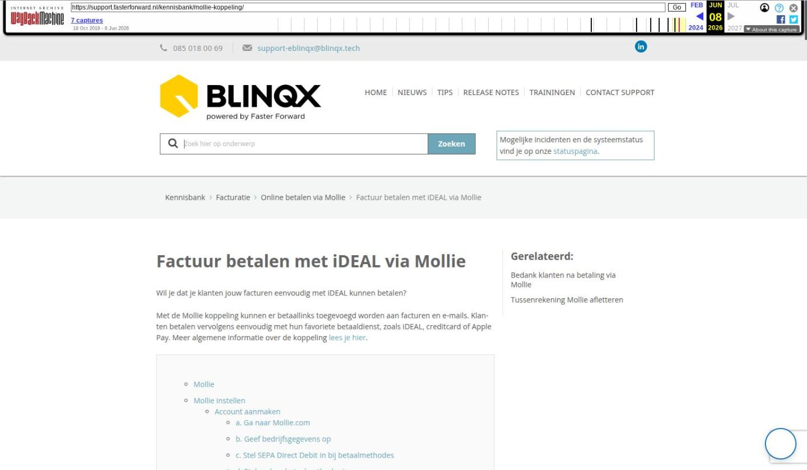

Factuur betalen met iDEAL via Mollie

Tekstinhoud
Factuur betalen met iDEAL via Mollie
Wil je dat je klanten jouw facturen eenvoudig met iDEAL kunnen betalen?
Met de Mollie koppeling kunnen er betaallinks toegevoegd worden aan facturen en e-mails. Klanten betalen vervolgens eenvoudig met hun favoriete betaaldienst, zoals iDEAL, creditcard of Apple Pay. Meer algemene informatie over de koppeling lees je hier.
Mollie
Mollie instellen
Account aanmaken
a. Ga naar Mollie.com
b. Geef bedrijfsgegevens op
c. Stel SEPA Direct Debit in bij betaalmethodes
d. Stel andere betaalmethodes in
e. Kopieer Live API key
Betaallinks versturen
a. Factuur aanmaken
b. Maak factuur aan met betaalwijze ‘Overschrijving’
c. Factuur met betaallink wordt klaargezet
d. E-mail met betaallink wordt klaargezet
e. Klant betaalt factuur
f. Factuur komt op ‘Betaald’ in eBlinqx
Overzicht betaallinks
Betaallink vernieuwen
Ontvangst betalingen
Mollie
Mollie is een systeem dat online betalingen verwerkt voor bedrijven. Hierdoor wordt betalen goedkoper voor bedrijven en makkelijker voor hun klanten. Klanten hoeven namelijk geen bedragen meer handmatig over te schrijven. In plaats daarvan betalen ze direct via een betaallink in de ontvangen factuur of e-mail. En dat scheelt tijd en voorkomt fouten.
Daarnaast zijn er bij Mollie geen installatiekosten en kan je vrijwel direct aan de slag, nadat je een account hebt aangemaakt. Bovendien is er geen opzegtermijn en betaal je slechts de transactiekosten.
Mollie instellen
Hieronder vind je de stappen die moet moet nemen om Mollie in te stellen.
Account aanmaken
Als eerste moet je een account aanmaken bij Mollie. Hieronder leggen we uit hoe je dat doet. Je kunt ook alle informatie terugvinden op de supportwebsite van Mollie.
a. Ga naar Mollie.com
Via deze link maak je eenvoudig een Mollie-account aan.
b. Geef bedrijfsgegevens op
Je komt nu op de startpagina. Voer hier jouw bedrijfsgegevens volledig in. Deze zijn namelijk nodig om betaallinks te versturen en betalingen te innen.
c. Stel SEPA Direct Debit in bij betaalmethodes
Klik op het onderdeel ‘Instellingen’ en klik vervolgens op ‘Betaalmethodes’.
Je komt nu in onderstaand scherm. Het is hier zeer belangrijk dat je ‘SEPA Overboeking’ inschakelt als betaalmethode. Als je dit niet doet, werkt de koppeling met eBlinqx niet.
d. Stel andere betaalmethodes in
Je kunt nu ook andere betaalmethodes instellen met de schuiver. In dit voorbeeld is ‘iDEAL’ ingeschakeld’. Je kiest hier zelf welke methodes je aanbiedt aan jouw klant.
e. Kopieer Live API key
Ga naar het tabblad ‘Developers’ en vervolgens naar ‘API-keys’. Hier zie je een ‘Live API-key’. Let op: deze sleutel is enkel zichtbaar wanneer je al jouw gegevens hebt ingevoerd en Mollie jouw account heeft geactiveerd.
Deze API key moet je doorgeven aan één van onze medewerkers wanneer zij hier om vragen. Je kunt deze ook rechtstreeks sturen naar support-eblinqx@blinqx.tech met de vermeling ‘API-key Mollie [bedrijfsnaam].
Wanneer je deze stappen hebt doorlopen, gaan onze consultants aan de slag. Je ontvangt een seintje zodra de Mollie koppeling voor je is ingericht.
Betaallinks versturen
Wanneer je een account hebt aangemaakt en onze consultants de koppeling voor jou hebben ingericht, is het versturen van een Mollie-betaallink heel simpel.
a. Factuur aanmaken
Ga naar het tabblad Financieel om een factuur aan te maken. Hier klik je op het plusicoon om een nieuw factuur aan te maken.
Het kan ook zijn dat je vanuit de workflow wordt doorgeleid naar het tabblad Financieel om daar een factuur aan te maken. Dan krijg je in de workflow de stap ‘factuur aanmaken’ te zien. Deze stap moet dan wel in de workflow ingeregeld zijn.
b. Maak factuur aan met betaalwijze ‘Overschrijving’
Je komt nu in het scherm waar je een factuur aanmaakt.
Kies hier bij ‘Betaalwijze’ voor ‘Overschrijving’. Als je dit niet doet, wordt de betaallink niet toegevoegd aan de factuur. De betaallink wordt wel altijd aangemaakt ongeacht de betaalwijze.
c. Factuur met betaallink wordt klaargezet
De factuur wordt vervolgens in huisstijl voor je klaargezet en de betaallink wordt toegevoegd.
d. E-mail met betaallink wordt klaargezet
Daarnaast wordt er een e-mail klaargezet waarin de betaallink ook is toegevoegd.
e. Klant betaalt factuur
De klant opent vervolgens zijn e-mail en bekijkt zijn factuur. Hij kan nu gelijk betalen via zijn favoriete betaalmethode.
f. Factuur komt op ‘Betaald’ in eBlinqx
Zodra de klant heeft betaald, wordt in eBlinqx de status van de factuur op ‘Betaald’ gezet.
Overzicht betaallinks
In eBlinqx is een overzicht beschikbaar waarin je de facturen kunt terugvinden die gegenereerd met een Mollie link. In het overzicht kan je verschillende gegevens terug zien, bijvoorbeeld factuurstatus en geldigheid betaallink. Dit overzicht staat onder Financieel – Overzicht – Overzicht betaallinks.
Betaallink vernieuwen
De betaallink is 12 dagen geldig. Dit staat vast en kan niet aangepast worden. Het is wel mogelijk om de betaallink te vernieuwen.
Het vernieuwen van de betaallink kan via dit icoon:
Is het icoon zwart dan betekent dit dat de betaallink is aangemaakt. Bij een rood icoon is de betaallink verlopen en dan kan je erop klikken om de betaallink te vernieuwen. Het icoon is te vinden in het facturenoverzicht en in het dossier achter de factuur.
Let op: na het vernieuwen van de betaallink zal de betaallink opnieuw beschikbaar gesteld moeten worden voor de klant. De ‘oude’ betaallink op de factuur blijft ongeldig en niet werkbaar. Het beschikbaar stellen kan op verschillende manieren:
Digimap
In de Digimap kan het tabblad ‘Mijn facturen’ ingesteld worden. Hier staat een overzicht van alle facturen. Door op de factuur te klikken, krijg je hier meer informatie over. Indien de facturen openstaan, staat daar ook de knop ‘Betaal’ waarmee de klant de factuur kan betalen. Deze knop wordt weer zichtbaar als je de betaallink vernieuwd.
Workflow
Een andere mogelijkheid is om vanuit de workflow onder de factuur de vernieuwde betaallink per e-mail toe te zenden. Deze stap moet wel ingericht zijn in de workflow. Is dit niet het geval en je wilt hiervan gebruik maken stuur dan een e-mail naar support-eblinqx@blinqx.tech.
Ontvangst betalingen
Het geld wordt overgeboekt via Mollie naar jouw rekening. Hier heeft Blinqx verder niets mee te maken. Wanneer je genoeg overboekingen op jouw Mollie account hebt ontvangen, stort Mollie meerdere bedragen in één keer op jouw rekening.
Zodra je een betaling hebt ontvangen, zie je dit ook terug in jouw Mollie account. Zie onderstaande afbeelding.
Wanneer eBlinqx vanuit Mollie het signaal krijgt dat de post is betaald dan boekt eBlinqx zelf de debiteur af tegen de tussenrekening en de kostenrekening die is ingesteld in Administratie onderhoud – betreffende administratie – tabblad Standaard subadministratie instellingen – Betalingsprovider.
Wanneer de betaling binnenkomt bij jouw bank dan kan je deze verder verwerken door het bankafschrift te importen in eBlinqx. De betaling boek je af tegen de tussenrekening.
Laatste update: 15 oktober 2025
Was deze informatie nuttig?
Ja Nee